源码流程分析
WordCount
1 | public class WordCount { |
socketTextStream
从socketTextStream方法进入到了Environment中， 经过几层简单的socketTextStream重载方法到了addSource方法：
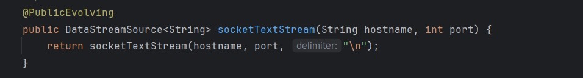

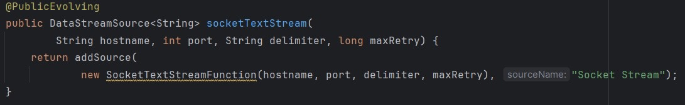
这里将重载过程增加的默认参数，例如，delimiter，maxRetry一起打包生成⼀个 SocketTextStreamFunction实例（Function）,并调用addSource进行添加。addSource再次经过一系列的对方法参数的富化重载,
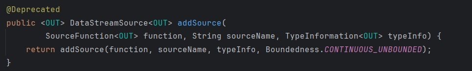
最终到了最内层的addSource重载：
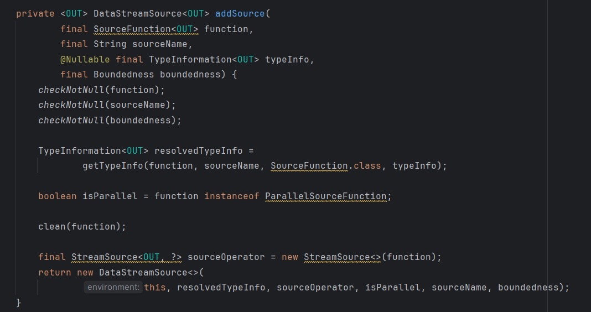
这个函数里主要逻辑：
入参检查
从SourceFunction类型抽取输出类型，这里实例是SocketTextStreamFunction，输出类型抽取的
结果是String.class
由这个Function生成一个Operator实例（StreamSource）
- 由Operator实例生成一个DataStream类型的实例（DataStreamSource），并返回
而在即将返回的DataStreamSource的构造中，调用了super构造（即DataStream构造），传入了⼀个 LegacySourceTransformation
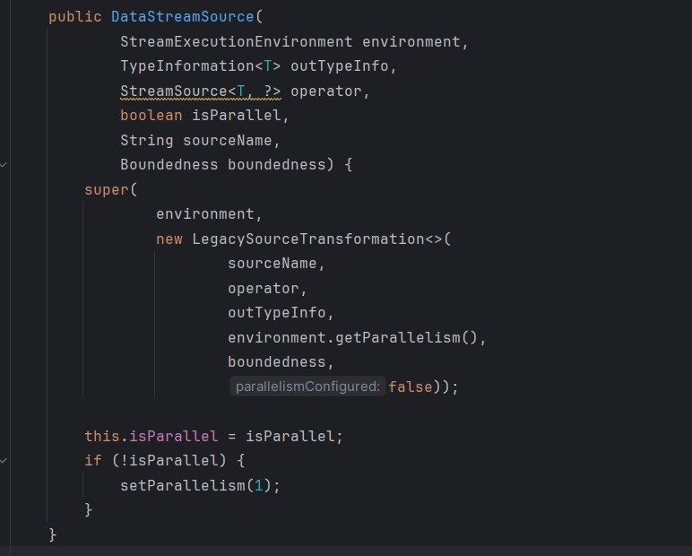
其中，又调用了父类（SingleOutputStreamOperator）的构造
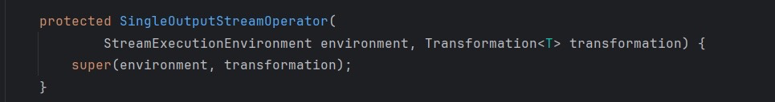
最终调用了DataStream的构造
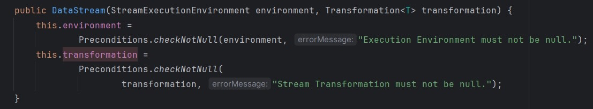
所以，经过以上对socketTextStream的函数调用栈分析，结论是最终返回了⼀个DataSteam实例，并 且实例中持有两个重要的实例：tansformation、environment。
tansformation是对SocketTextStreamFunction的封装
environment是用于持有上下文环境
flatMap
接着上面，从Demo中进行第二个链式调用的方法是flatMap，源码中同样是对flatMap进行了几次富参数化的重载，重载过程中同样是对数据类型进行了抽取，以及对默认的转换名进行了添加，以及对Function封装为Operator(StreamFlatMap)
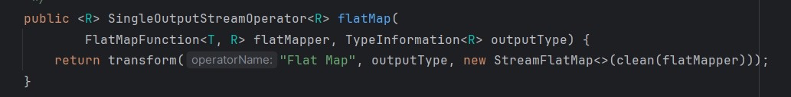
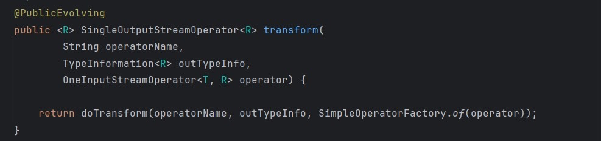
进入最内层的doTransform，
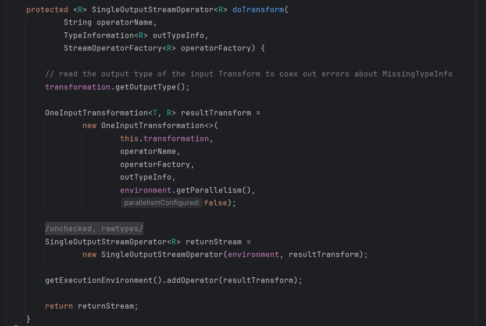
以上doTransform的主要逻辑如下，
- 由上游DataStream持有transformation抽出上游输出的类型，在这里是String.class，即为一行行的socket文本
- 由operator、上游transformation和上游输出类型以及并行度生成Transformation实例(OnelnputTransformation)
- 由生成的Transformation实例和environment实例生成本次转换后的输出流SingleOutputStreamOperator(DataStream)，并最终返回这个DataStream
- 由当前DataStream得到持有的environment，将本次的Transformation实例添加到environment
我们来看看这个很重要的addOperator，
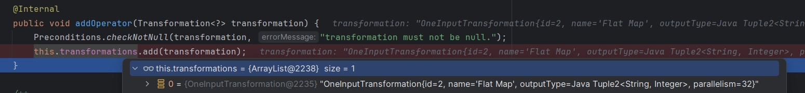
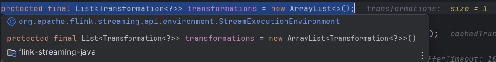
至此，我们总结一下在Demo中的第二个链式调用的操作flatMap里，Flink都做了些什么:
- 由上游的DataStream得出上游的输出类型以及上游调用过的Transformation，再结合本次的Transformation，来生成本次的DataStream，当然同样要将environment给本次的DataStream。
- 还有一个重要的操作是将本次的Transformation添加到了environment的一个List结构的transformations里。
keyBy
接着上游的SingleOutputStreamOperator流，keyBy对齐进行了分组，我们进入keyBy一探究竟。keyBy里面看似很简单，直接返回一个KeyedStream，
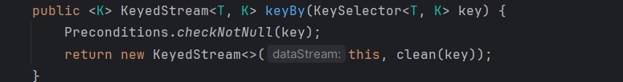
我们进入KeyedStream的构造方法，发现是一系列构造函数的重载，调用栈如下，
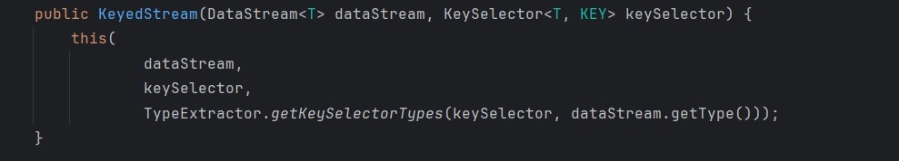
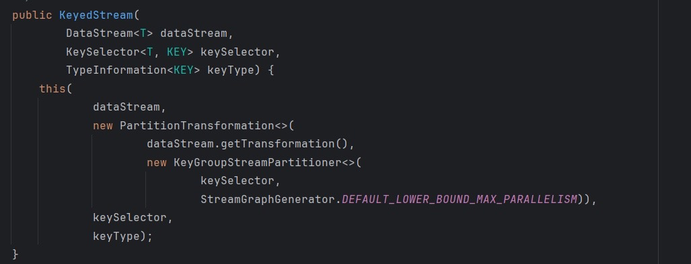
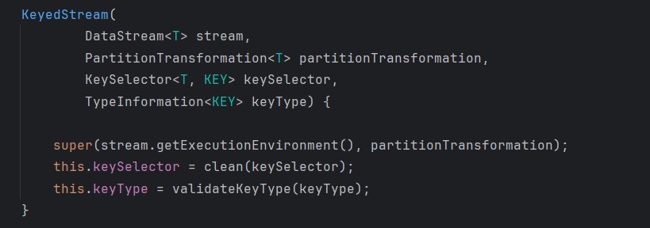
在重载过程中富化了一系列入参，例如，
- 分区函数StreamPartitioner
- 用分区函数StreamPartitioner和KeySelector，生成transformation实例:PartitionTransformation
- 最终调用了父类DataStream的构造器，将transformation和environment传给了构造的DataStream实例
但是整个过程并没有将transformation添加到transformations的List里，因为keyBy只是一个虚操作同时PartitionTransformation属于虚拟Transformation，而不是物理Transformation，只有物理Transformation才会转换为真正的执行节点交给Flink去进行绘制DAG。
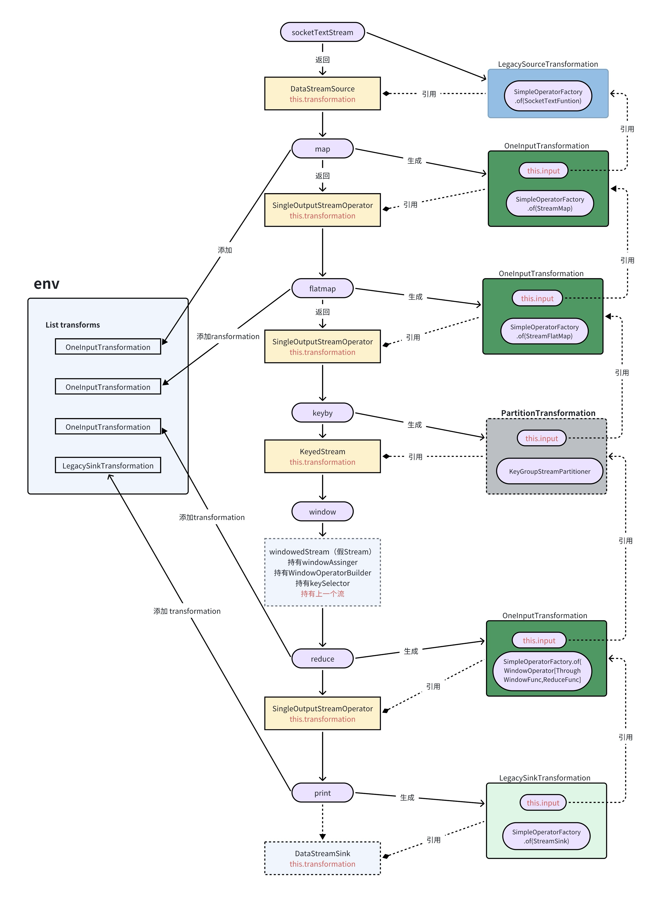
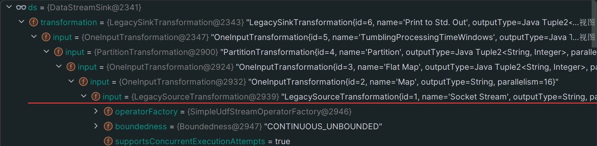
核心抽象
含义
四个核心抽象:
- DataStream:面向开发者(用户)的api工具。用户调用DataStream APl，将业务逻辑封装为Function传入。用户通过对DataStream进行链式调用，来组织整个作业的业务逻辑。
- Function:封装用户业务逻辑的最基本单元，面向开发者(用户)
- Transformation:面向内核，封装了用户的业务逻辑，并且表达了计算的上下游关系，组织成流水线。用户调用DataStream AP!进行数据处理的一系列逻辑，最终转换为Transformation流水线，在flink内会进而转化成StreamGraph、JobGraph、ExecutionGraph。
- Operator:面向内核，是Function的调用者;它封装了Function执行所需的数据物理来源、序列化、数据转发、容错。
而Operator又是由StreamTask执行，一个Task包含一个或者多个Operator（operator-chanin)。
关系
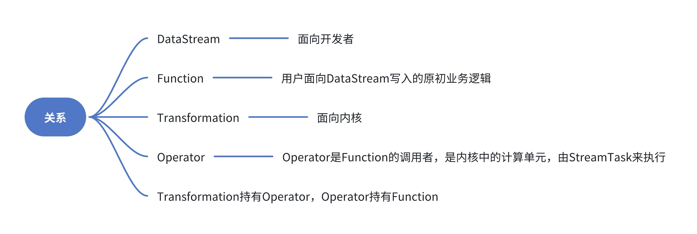

...
...
This is copyright.